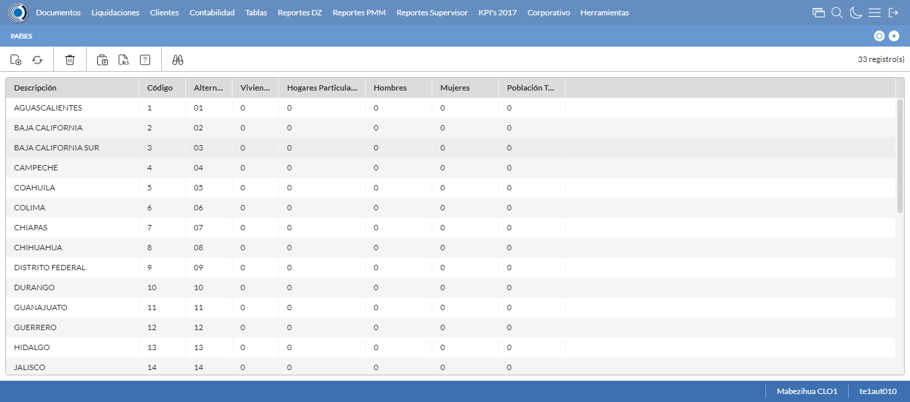
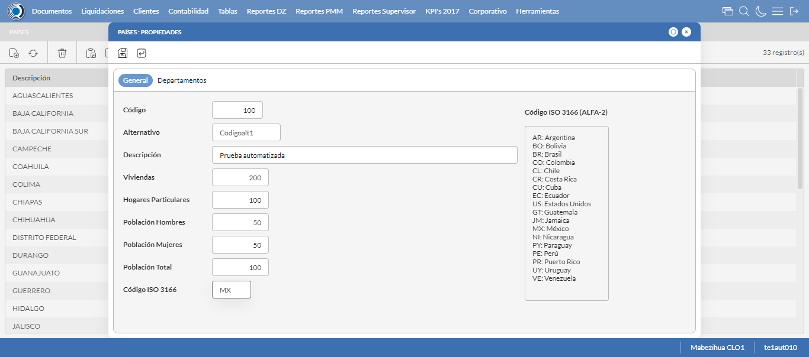
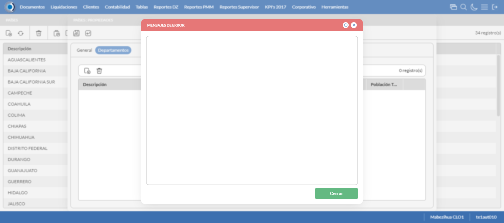
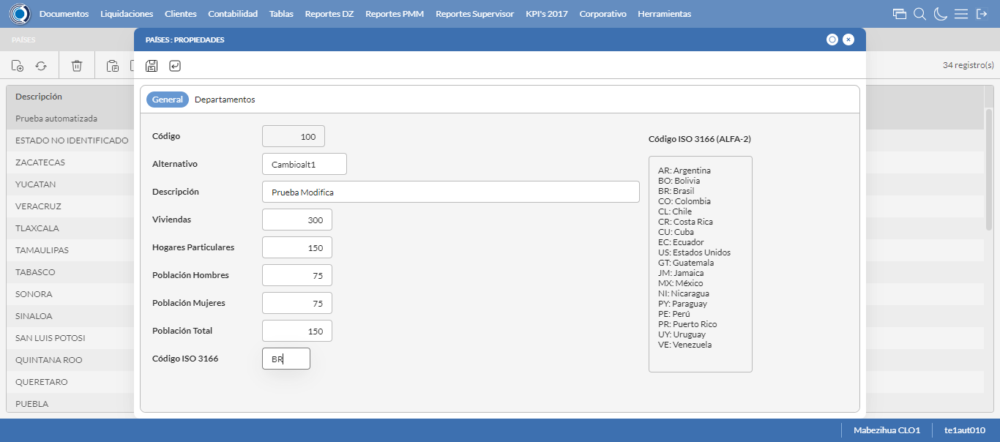
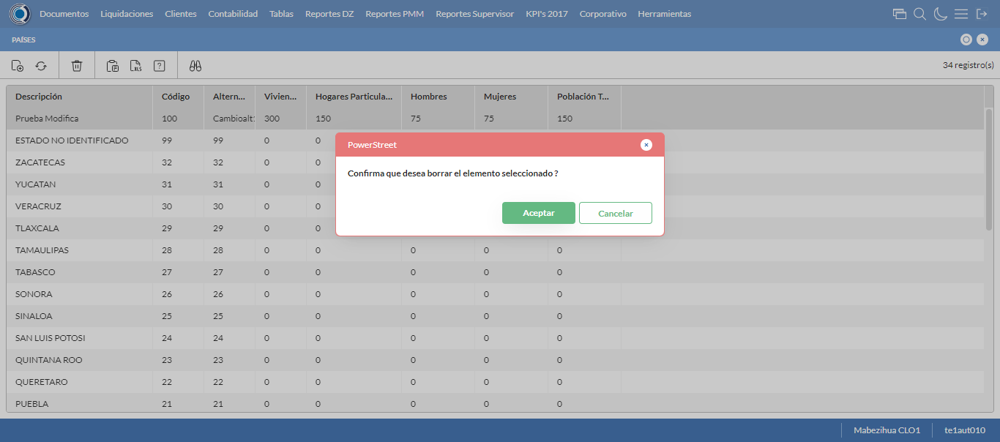

Desarrollado por : Area de Testing PWST
Fecha y hora de inicio : 2023-04-21 17:50:40
Duracion : 0:03:09.172358
Resultado : Total 8，Correctos 7 ，Errores 1 ，Taza de resultado 87.50%
Resumen 87.50% Errores 1 Fallidos 0 Correctos 7 Test realizados 8
| Caso de Prueba | Total | Correctos | Fallido | Error | Detalles | Captura del error |
| UbicacionesGeograficas.Test: Escenario 1 de Ubicaciones Geograficas | 8 | 7 | 0 | 1 | Detalles | |
test |
ft1_1: 2023-04-21 17:50:43,384 - root - INFO - Se abre el chrome
2023-04-21 17:50:44,647 - root - INFO - Entra a la URL
2023-04-21 17:50:44,956 - root - INFO - Maximiza la pantalla
Traceback (most recent call last):
File "C:\Users\gerar\AppData\Local\Programs\Python\Python311\Lib\site-packages\selenium\webdriver\remote\switch_to.py", line 88, in frame
frame_reference = self._driver.find_element(By.ID, frame_reference)
^^^^^^^^^^^^^^^^^^^^^^^^^^^^^^^^^^^^^^^^^^^^^^^^^
File "C:\Users\gerar\AppData\Local\Programs\Python\Python311\Lib\site-packages\selenium\webdriver\remote\webdriver.py", line 861, in find_element
return self.execute(Command.FIND_ELEMENT, {"using": by, "value": value})["value"]
^^^^^^^^^^^^^^^^^^^^^^^^^^^^^^^^^^^^^^^^^^^^^^^^^^^^^^^^^^^^^^^^^
File "C:\Users\gerar\AppData\Local\Programs\Python\Python311\Lib\site-packages\selenium\webdriver\remote\webdriver.py", line 444, in execute
self.error_handler.check_response(response)
File "C:\Users\gerar\AppData\Local\Programs\Python\Python311\Lib\site-packages\selenium\webdriver\remote\errorhandler.py", line 249, in check_response
raise exception_class(message, screen, stacktrace)
selenium.common.exceptions.NoSuchElementException: Message: no such element: Unable to locate element: {"method":"css selector","selector":"[id="mainFrame"]"}
(Session info: chrome=112.0.5615.138)
Stacktrace:
Backtrace:
GetHandleVerifier [0x00A6DCE3+50899]
(No symbol) [0x009FE111]
(No symbol) [0x00905588]
(No symbol) [0x009308F9]
(No symbol) [0x00930AFB]
(No symbol) [0x0095F902]
(No symbol) [0x0094B944]
(No symbol) [0x0095E01C]
(No symbol) [0x0094B6F6]
(No symbol) [0x00927708]
(No symbol) [0x0092886D]
GetHandleVerifier [0x00CD3EAE+2566302]
GetHandleVerifier [0x00D092B1+2784417]
GetHandleVerifier [0x00D0327C+2759788]
GetHandleVerifier [0x00B05740+672048]
(No symbol) [0x00A08872]
(No symbol) [0x00A041C8]
(No symbol) [0x00A042AB]
(No symbol) [0x009F71B7]
BaseThreadInitThunk [0x76047D49+25]
RtlInitializeExceptionChain [0x772CB74B+107]
RtlClearBits [0x772CB6CF+191]
During handling of the above exception, another exception occurred:
Traceback (most recent call last):
File "C:\Users\gerar\AppData\Local\Programs\Python\Python311\Lib\site-packages\selenium\webdriver\remote\switch_to.py", line 91, in frame
frame_reference = self._driver.find_element(By.NAME, frame_reference)
^^^^^^^^^^^^^^^^^^^^^^^^^^^^^^^^^^^^^^^^^^^^^^^^^^^
File "C:\Users\gerar\AppData\Local\Programs\Python\Python311\Lib\site-packages\selenium\webdriver\remote\webdriver.py", line 861, in find_element
return self.execute(Command.FIND_ELEMENT, {"using": by, "value": value})["value"]
^^^^^^^^^^^^^^^^^^^^^^^^^^^^^^^^^^^^^^^^^^^^^^^^^^^^^^^^^^^^^^^^^
File "C:\Users\gerar\AppData\Local\Programs\Python\Python311\Lib\site-packages\selenium\webdriver\remote\webdriver.py", line 444, in execute
self.error_handler.check_response(response)
File "C:\Users\gerar\AppData\Local\Programs\Python\Python311\Lib\site-packages\selenium\webdriver\remote\errorhandler.py", line 249, in check_response
raise exception_class(message, screen, stacktrace)
selenium.common.exceptions.NoSuchElementException: Message: no such element: Unable to locate element: {"method":"css selector","selector":"[name="mainFrame"]"}
(Session info: chrome=112.0.5615.138)
Stacktrace:
Backtrace:
GetHandleVerifier [0x00A6DCE3+50899]
(No symbol) [0x009FE111]
(No symbol) [0x00905588]
(No symbol) [0x009308F9]
(No symbol) [0x00930AFB]
(No symbol) [0x0095F902]
(No symbol) [0x0094B944]
(No symbol) [0x0095E01C]
(No symbol) [0x0094B6F6]
(No symbol) [0x00927708]
(No symbol) [0x0092886D]
GetHandleVerifier [0x00CD3EAE+2566302]
GetHandleVerifier [0x00D092B1+2784417]
GetHandleVerifier [0x00D0327C+2759788]
GetHandleVerifier [0x00B05740+672048]
(No symbol) [0x00A08872]
(No symbol) [0x00A041C8]
(No symbol) [0x00A042AB]
(No symbol) [0x009F71B7]
BaseThreadInitThunk [0x76047D49+25]
RtlInitializeExceptionChain [0x772CB74B+107]
RtlClearBits [0x772CB6CF+191]
During handling of the above exception, another exception occurred:
Traceback (most recent call last):
File "C:\xampp\htdocs\versiones\automatizaciones\AutoPWST\01UG\testCase\UbicacionesGeograficas.py", line 36, in test
self.driver.switch_to.frame("mainFrame")
File "C:\Users\gerar\AppData\Local\Programs\Python\Python311\Lib\site-packages\selenium\webdriver\remote\switch_to.py", line 93, in frame
raise NoSuchFrameException(frame_reference)
selenium.common.exceptions.NoSuchFrameException: Message: mainFrame
|
|
||||
test_000: Ingresa a la base de datos |
pt1_2: 2023-04-21 17:50:48,084 - root - INFO - Escribe el usuario
2023-04-21 17:50:48,184 - root - INFO - Escribe la contraseña
2023-04-21 17:50:48,286 - root - INFO - Se dio clic en el boton ingresar
2023-04-21 17:50:50,202 - root - INFO - Ejecutar Enterprise
2023-04-21 17:50:54,296 - root - INFO - Cambia entre pestañas
|
|
||||
test_001: Abre menu y ejecuta pantalla |
pt1_3: 2023-04-21 17:52:07,059 - root - INFO - Se ingreso a la pantalla mediante el buscador porque fallo el ingreso por menus
2023-04-21 17:52:07,069 - root - INFO - La función buscador funciona de manera correcta.
2023-04-21 17:52:07,643 - root - INFO - La pantalla ejecutada es Paises.
2023-04-21 17:52:07,643 - root - INFO - Captura: C:\xampp\htdocs\versiones\automatizaciones\AutoPWST\01UG\report\img screen：20230421_17_52_07.png
2023-04-21 17:52:18,191 - root - INFO - Se presiona el boton 'Nuevo', para crear un nuevo registro.
|
 | ||||
test_002: Abre la ventana de nuevo y crear un registro |
pt1_4: 2023-04-21 17:52:18,744 - root - INFO - Se abrio la pantalla para el ingreso de un registro nuevo.
2023-04-21 17:52:18,776 - root - INFO - El campo 'Codigo' si se encuentra visible.
2023-04-21 17:52:18,821 - root - INFO - El campo 'Alternativo' si se encuentra visible.
2023-04-21 17:52:18,849 - root - INFO - El campo 'Descrición' si se encuentra visible.
2023-04-21 17:52:18,886 - root - INFO - El campo 'Viviendas' si se encuentra visible.
2023-04-21 17:52:18,923 - root - INFO - El campo 'Hogares Particulares' si se encuentra visible.
2023-04-21 17:52:18,955 - root - INFO - El campo 'Población Hombres' si se encuentra visible.
2023-04-21 17:52:18,990 - root - INFO - El campo 'Población Mujeres' si se encuentra visible.
2023-04-21 17:52:19,029 - root - INFO - El campo 'Población Total' si se encuentra visible.
2023-04-21 17:52:19,093 - root - INFO - El campo 'Código ISO 3166' si se encuentra visible.
2023-04-21 17:52:19,289 - root - INFO - Ingresa el codigo del nuevo registro
2023-04-21 17:52:19,367 - root - INFO - Ingresa el codigo alternativo del nuevo registro
2023-04-21 17:52:19,439 - root - INFO - Ingresa la descripción del nuevo registro
2023-04-21 17:52:19,502 - root - INFO - Ingresa el número de viviendas del nuevo registro
2023-04-21 17:52:19,560 - root - INFO - Ingresa el número de hogares particulares del nuevo registro
2023-04-21 17:52:19,610 - root - INFO - Ingresa el número de Población de hombres del nuevo registro
2023-04-21 17:52:19,664 - root - INFO - Ingresa el número de Población de mujeres del nuevo registro
2023-04-21 17:52:19,730 - root - INFO - Ingresa el número de Población Total del nuevo registro
2023-04-21 17:52:19,787 - root - INFO - Ingresa el Codigo ISO del nuevo registro
2023-04-21 17:52:20,788 - root - INFO - Captura: C:\xampp\htdocs\versiones\automatizaciones\AutoPWST\01UG\report\img screen：20230421_17_52_20.png
2023-04-21 17:52:21,968 - root - INFO - Se hace el cambio de pestaña para continuar con el registro nuevo
2023-04-21 17:52:22,558 - root - INFO - Se presiona el boton 'Nuevo', para crear un nuevo registro.
2023-04-21 17:52:23,130 - root - INFO - El campo 'Codigo' si se encuentra visible.
2023-04-21 17:52:23,175 - root - INFO - El campo 'Alternativo' si se encuentra visible.
2023-04-21 17:52:23,216 - root - INFO - El campo 'Descrición' si se encuentra visible.
2023-04-21 17:52:23,258 - root - INFO - El campo 'Impuesto' si se encuentra visible.
2023-04-21 17:52:23,306 - root - INFO - El campo 'Viviendas' si se encuentra visible.
2023-04-21 17:52:23,344 - root - INFO - El campo 'Hogares Particulares' si se encuentra visible.
2023-04-21 17:52:23,385 - root - INFO - El campo 'Población Hombres' si se encuentra visible.
2023-04-21 17:52:23,420 - root - INFO - El campo 'Población Mujeres' si se encuentra visible.
2023-04-21 17:52:23,455 - root - INFO - El campo 'Población Total' si se encuentra visible.
2023-04-21 17:52:23,507 - root - INFO - Ingresa el codigo del nuevo registro
2023-04-21 17:52:23,580 - root - INFO - Ingresa el codigo alternativo del nuevo registro
2023-04-21 17:52:23,673 - root - INFO - Ingresa la descripción del nuevo registro
2023-04-21 17:52:25,105 - root - INFO - Ingresa el número de viviendas del nuevo registro
2023-04-21 17:52:25,369 - root - INFO - Ingresa el número de hogares particulares del nuevo registro
2023-04-21 17:52:25,537 - root - INFO - Ingresa el número de Población de hombres del nuevo registro
2023-04-21 17:52:25,673 - root - INFO - Ingresa el número de Población de mujeres del nuevo registro
2023-04-21 17:52:25,792 - root - INFO - Ingresa el número de Población Total del nuevo registro
2023-04-21 17:52:25,870 - root - INFO - Se hace el cambio de pestaña para continuar con el registro nuevo
2023-04-21 17:52:26,465 - root - INFO - Se presiona el boton 'Nuevo', para crear un nuevo registro.
2023-04-21 17:52:27,022 - root - INFO - El campo 'Localidad' si se encuentra visible.
2023-04-21 17:52:27,061 - root - INFO - El campo 'Alternativo' si se encuentra visible.
2023-04-21 17:52:27,094 - root - INFO - El campo 'Descrición' si se encuentra visible.
2023-04-21 17:52:27,127 - root - INFO - El campo 'Viviendas' si se encuentra visible.
2023-04-21 17:52:27,162 - root - INFO - El campo 'Hogares Particulares' si se encuentra visible.
2023-04-21 17:52:27,208 - root - INFO - El campo 'Población Hombres' si se encuentra visible.
2023-04-21 17:52:27,256 - root - INFO - El campo 'Población Mujeres' si se encuentra visible.
2023-04-21 17:52:27,287 - root - INFO - El campo 'Población Total' si se encuentra visible.
2023-04-21 17:52:27,373 - root - INFO - Ingresa el codigo del nuevo registro
2023-04-21 17:52:27,488 - root - INFO - Ingresa el codigo alternativo del nuevo registro
2023-04-21 17:52:27,577 - root - INFO - Ingresa la descripción del nuevo registro
2023-04-21 17:52:27,656 - root - INFO - Ingresa el número de viviendas del nuevo registro
2023-04-21 17:52:27,741 - root - INFO - Ingresa el número de hogares particulares del nuevo registro
2023-04-21 17:52:27,820 - root - INFO - Ingresa el número de Población de hombres del nuevo registro
2023-04-21 17:52:27,889 - root - INFO - Ingresa el número de Población de mujeres del nuevo registro
2023-04-21 17:52:27,962 - root - INFO - Ingresa el número de Población Total del nuevo registro
2023-04-21 17:52:28,018 - root - INFO - Se hace el cambio de pestaña para continuar con el registro nuevo
2023-04-21 17:52:28,645 - root - INFO - Se presiona el boton 'Nuevo', para crear un nuevo registro.
2023-04-21 17:52:29,202 - root - INFO - El campo 'Código' si se encuentra visible.
2023-04-21 17:52:29,233 - root - INFO - El campo 'Alternativo' si se encuentra visible.
2023-04-21 17:52:29,266 - root - INFO - El campo 'Descrición' si se encuentra visible.
2023-04-21 17:52:29,300 - root - INFO - El campo 'Viviendas' si se encuentra visible.
2023-04-21 17:52:29,336 - root - INFO - El campo 'Hogares Particulares' si se encuentra visible.
2023-04-21 17:52:29,386 - root - INFO - El campo 'Población Hombres' si se encuentra visible.
2023-04-21 17:52:29,430 - root - INFO - El campo 'Población Mujeres' si se encuentra visible.
2023-04-21 17:52:29,465 - root - INFO - El campo 'Población Total' si se encuentra visible.
2023-04-21 17:52:29,519 - root - INFO - Ingresa el codigo del nuevo registro
2023-04-21 17:52:29,634 - root - INFO - Ingresa el codigo alternativo del nuevo registro
2023-04-21 17:52:29,742 - root - INFO - Ingresa la descripción del nuevo registro
2023-04-21 17:52:29,842 - root - INFO - Ingresa el número de viviendas del nuevo registro
2023-04-21 17:52:29,959 - root - INFO - Ingresa el número de hogares particulares del nuevo registro
2023-04-21 17:52:30,063 - root - INFO - Ingresa el número de Población de hombres del nuevo registro
2023-04-21 17:52:30,170 - root - INFO - Ingresa el número de Población de mujeres del nuevo registro
2023-04-21 17:52:30,283 - root - INFO - Ingresa el número de Población Total del nuevo registro
2023-04-21 17:52:30,358 - root - INFO - Se da clic en el boton Guardar; se debe crear un nuevo registro.
2023-04-21 17:52:30,746 - root - INFO - Se da clic en el boton Guardar; se debe crear un nuevo registro.
2023-04-21 17:52:30,946 - root - INFO - Se hace el cambio de pestaña para continuar con el registro nuevo
2023-04-21 17:52:31,544 - root - INFO - Se presiona el boton 'Nuevo', para crear un nuevo registro.
2023-04-21 17:52:32,103 - root - INFO - El campo 'Artículo' si se encuentra visible.
2023-04-21 17:52:32,131 - root - INFO - El campo 'Impuesto' si se encuentra visible.
2023-04-21 17:52:34,966 - root - INFO - Se da clic en el boton Guardar; se debe crear un nuevo registro.
2023-04-21 17:52:35,293 - root - INFO - Se da clic en el boton Guardar; se debe crear un nuevo registro.
2023-04-21 17:52:35,544 - root - INFO - Se da clic en el boton Guardar; se debe crear un nuevo registro.
|
 | ||||
test_003: Repetir el registro creado anteriormente |
pt1_5: 2023-04-21 17:52:35,870 - root - INFO - Se presiona el boton 'Refrescar', para crear un nuevo registro igual al anterior.
2023-04-21 17:52:36,425 - root - INFO - Se presiona el boton 'Nuevo', para crear un nuevo registro igual al anterior.
2023-04-21 17:52:37,006 - root - INFO - Ingresa el codigo del nuevo registro
2023-04-21 17:52:37,112 - root - INFO - Ingresa el codigo alternativo del nuevo registro
2023-04-21 17:52:37,253 - root - INFO - Ingresa la descripción del nuevo registro
2023-04-21 17:52:37,342 - root - INFO - Ingresa el número de viviendas del nuevo registro
2023-04-21 17:52:37,468 - root - INFO - Ingresa el número de hogares particulares del nuevo registro
2023-04-21 17:52:37,578 - root - INFO - Ingresa el número de Población de hombres del nuevo registro
2023-04-21 17:52:37,682 - root - INFO - Ingresa el número de Población de mujeres del nuevo registro
2023-04-21 17:52:37,766 - root - INFO - Ingresa el número de Población Total del nuevo registro
2023-04-21 17:52:37,864 - root - INFO - Ingresa el Codigo ISO del nuevo registro
2023-04-21 17:52:38,866 - root - INFO - Captura: C:\xampp\htdocs\versiones\automatizaciones\AutoPWST\01UG\report\img screen：20230421_17_52_38.png
2023-04-21 17:52:40,162 - root - INFO - Se hace el cambio de pestaña para continuar con el registro nuevo
2023-04-21 17:52:40,381 - root - INFO - Se da clic en el boton Guardar; se debe crear un nuevo registro.
2023-04-21 17:52:41,383 - root - INFO - Captura: C:\xampp\htdocs\versiones\automatizaciones\AutoPWST\01UG\report\img screen：20230421_17_52_41.png
2023-04-21 17:52:46,935 - root - INFO - Se presiona el boton 'Cerrar', para cerrar el mensaje de duplicidad de llave primaria
2023-04-21 17:52:47,936 - root - INFO - Captura: C:\xampp\htdocs\versiones\automatizaciones\AutoPWST\01UG\report\img screen：20230421_17_52_47.png
2023-04-21 17:52:48,220 - root - INFO - Se presiona el boton 'Cerrar', para cerrar el mensaje de duplicidad de llave primaria
2023-04-21 17:52:48,364 - root - INFO - Se presiona el boton 'Cerrar', para cerrar la ventana
|
 | ||||
test_004: Modificar el registro |
pt1_6: 2023-04-21 17:52:48,608 - root - INFO - Se presiona el boton 'Refrescar', para crear un nuevo registro igual al anterior.
2023-04-21 17:52:50,439 - root - INFO - Se presiona el boton 'Codigo', para buscar un nuevo registro y poder modificarlo.
2023-04-21 17:52:52,559 - root - INFO - Se da clic en el registro creado, para proceder a modificarlo.
2023-04-21 17:52:53,236 - root - INFO - Ingresa el codigo alternativo del nuevo registro
2023-04-21 17:52:53,381 - root - INFO - Ingresa la descripción del nuevo registro
2023-04-21 17:52:53,518 - root - INFO - Ingresa el número de viviendas del nuevo registro
2023-04-21 17:52:53,634 - root - INFO - Ingresa el número de hogares particulares del nuevo registro
2023-04-21 17:52:53,799 - root - INFO - Ingresa el número de Población de hombres del nuevo registro
2023-04-21 17:52:54,013 - root - INFO - Ingresa el número de Población de mujeres del nuevo registro
2023-04-21 17:52:54,166 - root - INFO - Ingresa el número de Población Total del nuevo registro
2023-04-21 17:52:54,356 - root - INFO - Ingresa el Codigo ISO del nuevo registro
2023-04-21 17:52:55,356 - root - INFO - Captura: C:\xampp\htdocs\versiones\automatizaciones\AutoPWST\01UG\report\img screen：20230421_17_52_55.png
2023-04-21 17:52:57,046 - root - INFO - Se hace el cambio de pestaña para continuar con el registro nuevo
2023-04-21 17:52:57,723 - root - INFO - Se da clic en el registro creado, para proceder a modificarlo.
2023-04-21 17:52:58,410 - root - INFO - Ingresa el codigo alternativo del nuevo registro
2023-04-21 17:52:58,600 - root - INFO - Ingresa la descripción del nuevo registro
2023-04-21 17:52:59,956 - root - INFO - Ingresa el número de viviendas del nuevo registro
2023-04-21 17:53:00,100 - root - INFO - Ingresa el número de hogares particulares del nuevo registro
2023-04-21 17:53:00,226 - root - INFO - Ingresa el número de Población de hombres del nuevo registro
2023-04-21 17:53:00,365 - root - INFO - Ingresa el número de Población de mujeres del nuevo registro
2023-04-21 17:53:00,508 - root - INFO - Ingresa el número de Población Total del nuevo registro
2023-04-21 17:53:00,608 - root - INFO - Se hace el cambio de pestaña para continuar con el registro nuevo
2023-04-21 17:53:01,759 - root - INFO - Se da clic en el registro creado, para proceder a modificarlo.
2023-04-21 17:53:02,418 - root - INFO - Ingresa el codigo alternativo del nuevo registro
2023-04-21 17:53:02,549 - root - INFO - Ingresa la descripción del nuevo registro
2023-04-21 17:53:02,654 - root - INFO - Ingresa el número de viviendas del nuevo registro
2023-04-21 17:53:02,789 - root - INFO - Ingresa el número de hogares particulares del nuevo registro
2023-04-21 17:53:02,907 - root - INFO - Ingresa el número de Población de hombres del nuevo registro
2023-04-21 17:53:03,019 - root - INFO - Ingresa el número de Población de mujeres del nuevo registro
2023-04-21 17:53:03,142 - root - INFO - Ingresa el número de Población Total del nuevo registro
2023-04-21 17:53:03,201 - root - INFO - Se hace el cambio de pestaña para continuar con el registro nuevo
2023-04-21 17:53:04,366 - root - INFO - Se da clic en el registro creado, para proceder a modificarlo.
2023-04-21 17:53:05,099 - root - INFO - Ingresa el codigo alternativo del nuevo registro
2023-04-21 17:53:05,260 - root - INFO - Ingresa la descripción del nuevo registro
2023-04-21 17:53:05,362 - root - INFO - Ingresa el número de viviendas del nuevo registro
2023-04-21 17:53:05,481 - root - INFO - Ingresa el número de hogares particulares del nuevo registro
2023-04-21 17:53:05,592 - root - INFO - Ingresa el número de Población de hombres del nuevo registro
2023-04-21 17:53:05,704 - root - INFO - Ingresa el número de Población de mujeres del nuevo registro
2023-04-21 17:53:05,829 - root - INFO - Ingresa el número de Población Total del nuevo registro
2023-04-21 17:53:05,880 - root - INFO - Se da clic en el boton Guardar; se debe crear un nuevo registro.
2023-04-21 17:53:06,384 - root - INFO - Se da clic en el boton Guardar; se debe crear un nuevo registro.
2023-04-21 17:53:06,591 - root - INFO - Se hace el cambio de pestaña para continuar con el registro nuevo
2023-04-21 17:53:07,849 - root - INFO - Se da clic en el registro creado, para proceder a modificarlo.
2023-04-21 17:53:16,477 - root - INFO - Se da clic en el boton Guardar; se debe crear un nuevo registro.
2023-04-21 17:53:17,316 - root - INFO - Se da clic en el boton Guardar; se debe crear un nuevo registro.
2023-04-21 17:53:18,871 - root - INFO - Se da clic en el boton Guardar; se debe modificar la informacion del registro.
|
 | ||||
test_005: Eliminar el registro creado |
pt1_7: 2023-04-21 17:53:19,231 - root - INFO - Se presiona el boton 'Refrescar', para proceder a eliminar el registro.
2023-04-21 17:53:20,880 - root - INFO - Se da clic en el registro creado, para proceder a eliminarlo.
2023-04-21 17:53:21,483 - root - INFO - Se hace el cambio de pestaña para continuar con el registro nuevo
2023-04-21 17:53:22,588 - root - INFO - Se da clic en el registro creado, para proceder a modificarlo.
2023-04-21 17:53:23,232 - root - INFO - Se hace el cambio de pestaña para continuar con el registro nuevo
2023-04-21 17:53:24,410 - root - INFO - Se da clic en el registro creado, para proceder a modificarlo.
2023-04-21 17:53:25,018 - root - INFO - Se hace el cambio de pestaña para continuar con el registro nuevo
2023-04-21 17:53:26,290 - root - INFO - Se da clic en el registro creado, para proceder a modificarlo.
2023-04-21 17:53:26,431 - root - INFO - Se presiona el boton 'Eliminar', para eliminar el registro.
2023-04-21 17:53:26,667 - root - INFO - Se da clic en el boton Guardar; se debe crear un nuevo registro.
2023-04-21 17:53:27,060 - root - INFO - Se da clic en el boton Guardar; se debe crear un nuevo registro.
2023-04-21 17:53:27,235 - root - INFO - Se da clic en el boton Guardar; se debe modificar la informacion del registro.
2023-04-21 17:53:27,928 - root - INFO - Se da clic en el registro creado, para proceder a eliminarlo.
2023-04-21 17:53:28,603 - root - INFO - Se hace el cambio de pestaña para continuar con el registro nuevo
2023-04-21 17:53:29,866 - root - INFO - Se da clic en el registro creado, para proceder a modificarlo.
2023-04-21 17:53:30,892 - root - INFO - Se hace el cambio de pestaña para continuar con el registro nuevo
2023-04-21 17:53:32,450 - root - INFO - Se da clic en el registro creado, para proceder a modificarlo.
2023-04-21 17:53:32,666 - root - INFO - Se presiona el boton 'Eliminar', para eliminar el registro.
2023-04-21 17:53:33,241 - root - INFO - Se hace el cambio de pestaña para continuar con el registro nuevo
2023-04-21 17:53:34,076 - root - INFO - Se da clic en el registro creado, para proceder a modificarlo.
2023-04-21 17:53:34,268 - root - INFO - Se presiona el boton 'Eliminar', para eliminar el registro.
2023-04-21 17:53:34,509 - root - INFO - Se da clic en el boton Guardar; se debe crear un nuevo registro.
2023-04-21 17:53:34,805 - root - INFO - Se da clic en el boton Guardar; se debe modificar la informacion del registro.
2023-04-21 17:53:35,494 - root - INFO - Se da clic en el registro creado, para proceder a eliminarlo.
2023-04-21 17:53:36,143 - root - INFO - Se hace el cambio de pestaña para continuar con el registro nuevo
2023-04-21 17:53:37,741 - root - INFO - Se da clic en el registro creado, para proceder a modificarlo.
2023-04-21 17:53:37,985 - root - INFO - Se presiona el boton 'Eliminar', para eliminar el registro.
2023-04-21 17:53:38,274 - root - INFO - Se da clic en el boton Guardar; se debe modificar la informacion del registro.
2023-04-21 17:53:38,498 - root - INFO - Se presiona el boton 'Eliminar', para eliminar el registro.
2023-04-21 17:53:40,499 - root - INFO - Captura: C:\xampp\htdocs\versiones\automatizaciones\AutoPWST\01UG\report\img screen：20230421_17_53_40.png
2023-04-21 17:53:40,793 - root - INFO - Se confirma el eliminado del registro
2023-04-21 17:53:41,236 - root - INFO - Se presiona el boton 'Refrescar', para crear un nuevo registro igual al anterior.
2023-04-21 17:53:43,321 - root - INFO - Se presiona el boton 'Cerrar', para cerrar la pantalla de Ubicaciones Geograficas.
|
 | ||||
test_006: Cerrar_Navegador |
pt1_8: 2023-04-21 17:53:49,802 - root - INFO - Se cierra chrome
|
|
||||
| Caso de prueba | 8 | 7 | 0 | 1 | Taza de resultado：87.50% | |